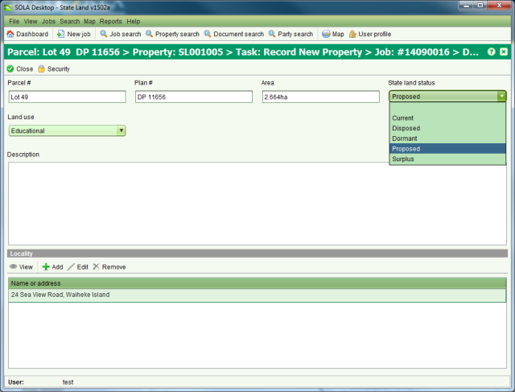

The Parcel Details screen allows you to view or edit parcel information. It can be accessed
from the Parcels tab on the Property Details screen by selecting a parcel to view and
clicking View or  Edit. It is also available from the Parcel Map Editor
when creating or updating parcel records.
Edit. It is also available from the Parcel Map Editor
when creating or updating parcel records.

Parcel Details
You can enter the parcel number (a.k.a. lot number), plan number, area, state land status and land use for the parcel as well as a description and locality.
If the parcel has no spatial definition, you should enter a metes and bounds description for the parcel that describes the general size and shape along with its approximate location. If the parcel does have a spatial definition, you can enter any relevant details in the description such as the buildings and structures that are located on the parcel.
The locality of the parcel can be a house number, street address or a general geographic location. SOLA State Land allows a parcel to have multiple localities specified as some areas of land have multiple local and formal location descriptions.
Where the parcel is part of a state land property, you can also indicate its state land status. The state land statuses available include
|
The land has been nominated for acquisition by the state, but it is not currently under state control. |
|
The state is currently responsible for managing and maintaining the land. |
|
The land is under state control, but it is not being used for any purpose (e.g. it has been land banked). |
|
The land is no longer required by the state and can be disposed of. |
|
The land has been disposed and is no longer the responsibility of the state. |
The state land agency must manually update the state land status of the parcel as and when appropriate. SOLA State Land does not modify the state land status except to set the status of all parcels to disposed when the state land property containing the parcels is disposed using the Dispose Property task.
The Parcel Details screen does not support editing the spatial definition of the parcel. To modify the spatial definition, you must use the tools available in the Parcel Map Editor when processing a Create or Change Parcels task.